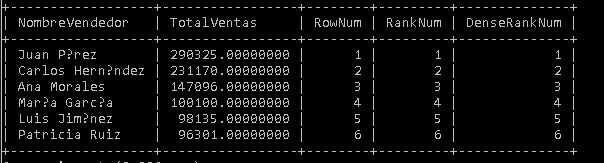

Código SQL
WITH VentasPorVendedor AS (
SELECT
v.VendedorID,
v.NombreVendedor,
SUM(dp.Cantidad * dp.PrecioVenta * (1 - dp.Descuento / 100)) AS TotalVentas
FROM Vendedores v
INNER JOIN Pedidos p ON v.VendedorID = p.VendedorID
INNER JOIN DetallesPedido dp ON p.PedidoID = dp.PedidoID
WHERE p.Estado = 'Entregado'
GROUP BY v.VendedorID, v.NombreVendedor
)
SELECT
NombreVendedor,
TotalVentas,
ROW_NUMBER() OVER (ORDER BY TotalVentas DESC) AS NumeroFila,
RANK() OVER (ORDER BY TotalVentas DESC) AS Ranking,
DENSE_RANK() OVER (ORDER BY TotalVentas DESC) AS RankingDenso
FROM VentasPorVendedor;
Resultado de la Consulta
En este apartado se muestra la captura del resultado obtenido al ejecutar la consulta en MySQL, donde se visualiza el desempeño de cada vendedor según sus ventas totales.
